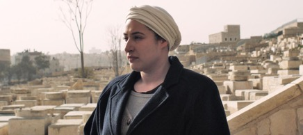

Mountain de l’Israélienne Yaelle Kayam, membre du jury au Festival des Films de Plein Air de Paris, décroche le Regard d’or d’une valeur de CHF 30’000, au terme d’une édition anniversaire du FIFF couronnée de succès. Dans une Compétition Internationale qui n’était pourtant pas dominée en nombre par les réalisatrices, le Jury International Longs métrages a également décerné un Prix Spécial d’une valeur de 10’000 Francs Suisses au film mexicain Semana Santa d’Alejandra Márquez Abella et a attribué une mention spéciale à YO de Matías Meyer. Le public a aussi choisi son lauréat: Blanka du réalisateur japonais Kohki Hasei. Le Jury International Courts métrages a récompensé le documentaire Iceberg, de la cinéaste cubaine Juliana Gómez. Nouveau cette année, le Jury Réseau Cinéma CH, qui regroupe des étudiant-e-s issu-e-s des sections cinéma des hautes écoles suisses, a attribué un prix au court métrage brésilien Mr Alfredo.
En tout, ce sont des prix pour un montant de CHF 65’500 qui ont été attribués. L’hommage rendu aux femmes a été salué par Jane Campion, grande dame du cinéma et unique réalisatrice à avoir remporté la Palme d’or. Cette semaine a été l’occasion de mettre en lumière les réalisatrices africaines, avec la présence des cinéastes Nadia El Fani, Angèle Diabang, Rama Thiaw et Pocas Pascoal. Côté suisse, la réalisatrice bernoise aux origines tibétaines Yangzom Brauen s’est vu décerner le «Enrico Fulchignoni Award » attribué par l’UNESCO pour son court métrage Born in Battle. Cette 30e édition a confirmé la place incontournable qu’occupe le FIFF, à l’heure où le dialogue interculturel devient plus nécessaire que jamais. La semaine a aussi été ponctuée de riches discussions et débats autour de la place des femmes au cinéma. Festivalier-e-s et intervenant-e-s ont apprécié ce cadre propice à soulever des sujets en phase avec l’actualité. Homme de cinéma, l’influent Pierre Rissient a capté ses auditoires en mettant en lumière les oeuvres injustement méconnues de la cinéaste Ida Lupino.